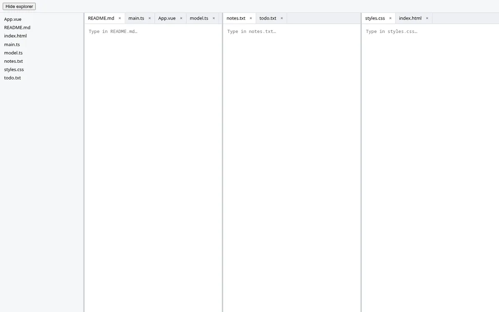
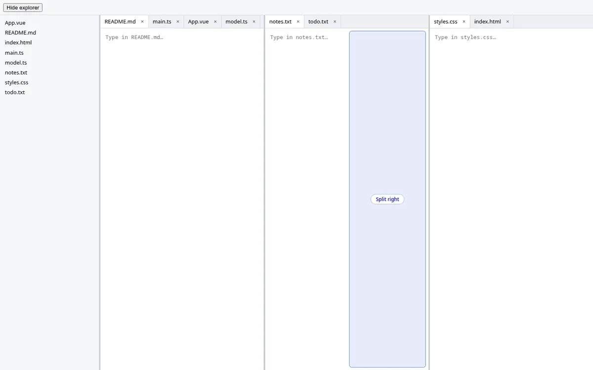
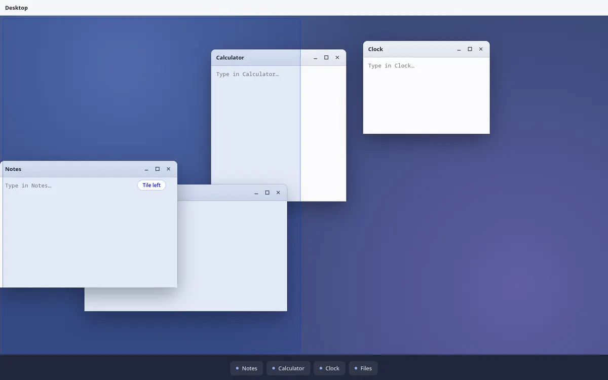
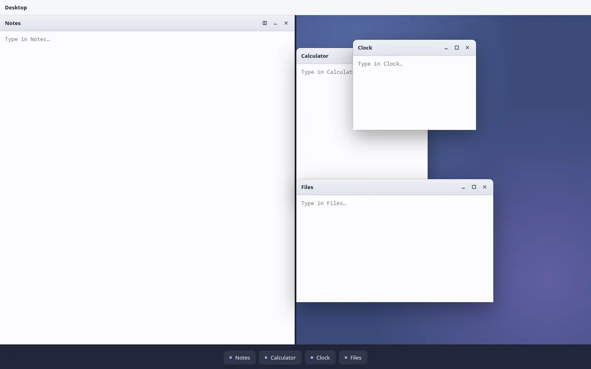
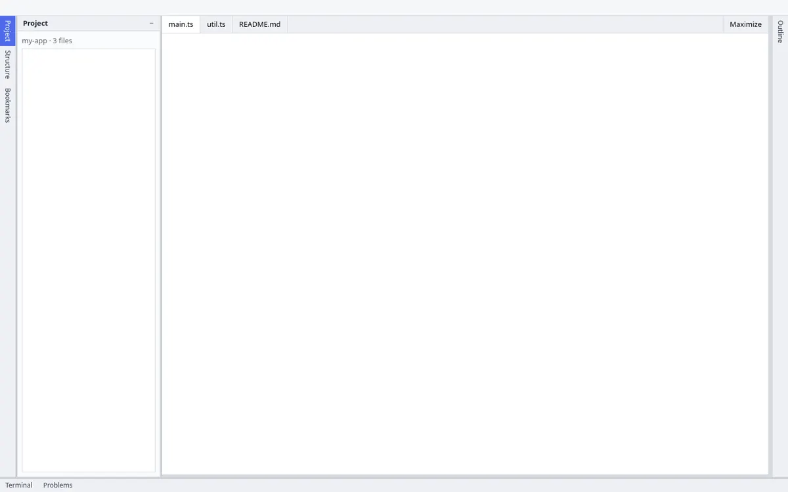
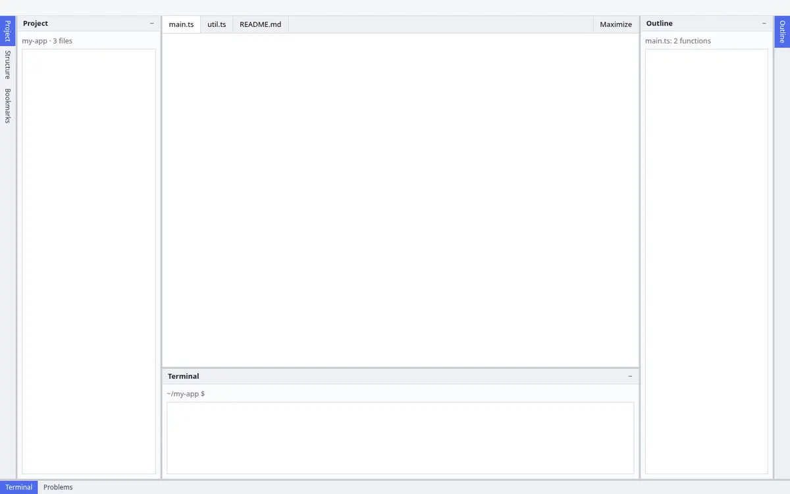

三个示例都只经 nb-layout 的公开入口写成，每个目录可以单独拷走、装依赖就跑。已合入 master，在 packages/nb-layout/examples/。截图是 1440×900 的亮色。
标签在编组之间拖、拖到编组边上拆出新编组、关空的编组缩回去、侧栏收起、布局存进浏览器。


拖标题栏移动、拖边角缩放、按到就到最上面、最大化与最小化、拖到桌面左右缘平铺进布局树。


三个停靠区靠边上的按钮条开关、收起再展开回到原来的宽度、按钮在条之间拖动换区、编辑区最大化、快捷键。


逐条记录在 Task 的 friction.md。按影响排序：几个示例都撞到、每个示例为它多写的代码与要守的不显然约束，以及照抄的第三方漏了它会出什么错。
| 排序 | 组 | 三个示例怎么撞到的 | 后续 Task 的候选 |
|---|---|---|---|
| 1 | 结构操作不能“试做”，树不能复制 | 标签编组与桌面都要判断“这次拆分、平铺放不放得下”：复制一棵树、照做一遍、读 over-constrained，各约 30 行；只剩一扇时换窗照直觉写会丢窗；同向拆分越拆越深 | 库加 grid.clone()（带运行期策略）、结构操作的试做或 canSplit、“在某块叶旁插入兄弟” |
| 2 | 收起与展开的语义分散 | IDE 一个示例撞了八条：收起前的宽度有两种读法，还会在收起时被改写，存档该存什么只能猜；收起不通知；没有“这块区现在不能展开”；按钮条会被别处的拖动挤到 0 | 统一“展开回到哪”并写在一处；收起也通知；策略加“不能展开”与“刚性”；宿主工具补 setSize |
| 3 | 浮动窗的几何接口 | 桌面一个示例撞了十五条：夹取函数没有原点；缩放手柄的上限是尺寸不是边界；取不到某块叶此刻的矩形；“按到窗就抬升”要在外层捕获；矩形变化没有过渡 | 夹取与缩放收区域矩形；网格交出摆放结果；浮动窗的按下事件；整窗移动的组合函数 |
| 4 | 拖动会话的约定没有诊断 | 三个示例都撞到：起拖要自己把过渡送到终点；反馈层忘了标记时落点会被盖住；网格诊断不接就完全无声 | 开发时检查漏调、漏标记；诊断缺省打到控制台 |
| 5 | 说明与标记没写清 | 读源码或跑探针才知道：分隔线标记的格式、禁用分隔线的回调收到的是分支 id、最大化排除只对外接矩形外的叶有效、离开中的插槽是冻结的 | 一次把说明补齐（便宜，不改行为） |
| 6 | 其它 | 滚动的标签条插入位会错；TS 6 下的一处类型配置（发布冒烟已改）；焦点只有前后两向；整窗移动没有键盘 | 按需 |
推荐的先后：第 5 组最便宜，可以随时做；第 1、2 组是改库的行为与接口，影响最大；第 3 组只在有浮动窗的宿主里用得上，可以等有使用方再定。